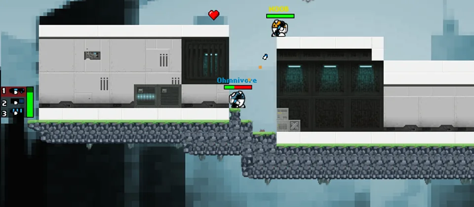

Stay moving
Standing still makes you an easy target.
SkullRush
SkullRush is an open-source 2D online multiplayer shooter with platform movement, custom maps, and tiny downloads.
Play SkullRush
Basics
Combat
Standing still makes you an easy target.
Higher platforms give cleaner shots and more escape routes.
Knowing item spots and paths is a huge advantage.